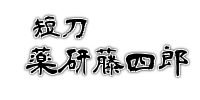
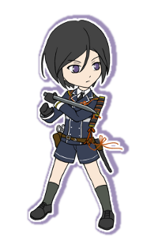

「大将が本気でそう思ってるんなら何も言わないさ」
 
子供のような容姿に反して思考や言動が達観している。かと思えば見た目通りの無邪気な姿を見せる事もある。
一般的な正解が当人にとっての正解でないことをよく理解しており、つかず離れずの距離から主人公が幸せになれる『正解』を探しているようだ。
【特徴】
この本丸に顕現する可能性のある刀の中で、主人公を取り巻く状況を一番客観的に見る事が出来ている。
その為、
悪い方向
（
バッドエンド
）
へ行きそうになった時に真っ先に気づき、挽回の可能性を作ってくれる。